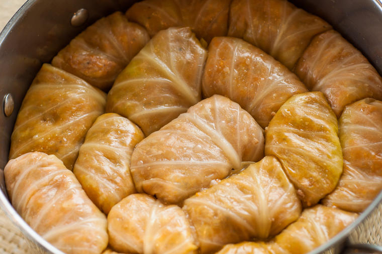

Sarma

Description
Sarma, or Serbian stuffed cabbage, is a meal in and of itself and needs little accompaniment.
A side of fresh bread or potato salad makes it a feast, or try starting with soup like pasulj.
Ingredients
- 1 (3-to 4-pound) head cabbage
- 1 pound ground chuck
- 1/2 pound ground pork
- 1 cup raw rice, rinsed
- 1 (1.4-ounce) package dehydrated onion soup mix
- 1 (32-ounce) jar sauerkraut, rinsed and drained
- 6 medium smoked ribs, ham hocks, or other smoked meat
- 1 (8-ounce) can tomato sauce
- 1 (10 3/4-ounce) can tomato soup
Steps
-
Prepare the Cabbage
- Gather the ingredients.
- Steam the head of cabbage until the outer leaves are limp, then cool slightly and separate the leaves.
- With a paring knife, remove the tough ribs from the leaves without damaging them. Reserve the
tougher outer leaves, but don't use for rolling.
- Bake burek in the preheated oven until golden brown, 20 to 30 minutes.
-
Make the Filling
- In a medium bowl, mix together the ground chuck, ground pork, rice, and onion soup mix.
- Adding a small amount of water will make the mixture easier to handle.
-
Assemble the Rolls
- Heap 2 tablespoons of filling onto each steamed, prepared cabbage leaf.
- Fold the bottom of the cabbage leaf up over the meat.
- Fold sides to the center and roll away from yourself to encase completely.
- Repeat until the meat filling is gone.
-
Bake the Sarma
- Heat oven to 350 F.
- Discard the cabbage core and coarsely chop any remaining cabbage except the tough outer
leaves you have reserved.
- Spread the chopped cabbage on the bottom of a large casserole dish or Dutch oven. Add the
drained sauerkraut.
- Layer on the cabbage rolls, seam-side down.
- Cut the smoked ribs into pieces. Space the ribs or other smoked meat of choice between
the cabbage rolls.
- Cover rolls with reserved tough outer leaves.
- Mix tomato sauce and soup with enough water to make a liquidy consistency.
- Pour over rolls until mixture is level with rolls, but not over the top.
- Cover the casserole dish and bake 1 hour.
- Then reduce temperature to 325 F and bake for 2 more hours.
- Let sit 20 to 30 minutes before serving.
- This dish freezes well.
-
How to Store and Freeze
- Sarma can be prepared up to a day before baking. Assemble the rolls, top with sauce,
and cover tightly. Store in the fridge until ready to bake; remove from the fridge 30
minutes before baking.
- Unbaked stuffed cabbage rolls can be frozen. Assemble the rolls but stop before placing
them atop the cabbage and sauerkraut and don't add the tomato sauce. Line a baking dish
with aluminum foil followed by plastic wrap and top with the cabbage rolls. Wrap the top
in the same way and freeze. Remove from the baking dish, wrap tightly, and store for up
to three months. Defrost in the fridge overnight before proceeding with the recipe and baking.